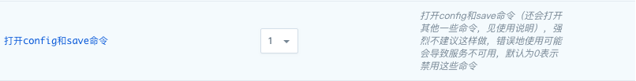

服务功能
切换私网
您可以在 「基础属性」 栏选择切换私网，之后选择对应的 VPC 网络和私有网络，点击提交即可。
文件下载
Redis 5.0.5 - YiQiYun 2.0.0 在「配置参数」栏添加了 WebConsole 的服务，您可以通过该服务下载日志、RDB 数据文件和 AOF 文件，该服务默认没有密码，建议在使用时配置密码。

您可以通过浏览器访问 http://[IP地址]:80 来访问下载页面

您也可以在虚机中使用以下链接来下载需要的文件
设置了用户名和密码的用户，需要将链接中的 [username]、[password]、[ip] 分别替换为您的用户名、密码和目标 ip
未设置用户名和密码的用户可以删除 [username]:[password]@ 部分，并将 [ip] 替换为目标 ip 即可
# 下载 RDB 文件
wget http://[username]:[password]@[ip]/redis/dump.rdb
# 下载 AOF 文件
wget http://[username]:[password]@[ip]/redis/appendonly.aof
# 下载日志文件
wget http://[username]:[password]@[ip]/redis/redis-server.log
禁用命令的执行
为了您的数据安全，我们禁用了部分命令，并在前端开启了常用的命令操作：
-
清空数据
-
你可以根据需求来选择不同的执行命令：
-
FLUSHALL: 清空所有的数据
-
FLUSHDB: 清空指定数据库的数据
-
-
-
RDB 文件下载
-
先执行 BGSAVE 命令，该命令会在主节点生成最新的 RDB 文件
-
根据 文件下载 的说明下载主节点的 RDB 文件使用
-
其他
为了更好的管理 Redis 服务，我们默认禁用一些 Redis 的命令，禁用的命令列表如下：
- BGREWRITEAOF
- BGSAVE
- DEBUG
- CONFIG
- SAVE
- SHUTDOWN
- SLAVEOF
- KEYS
为兼容 Redis 5.0.3 - YiQiYun 1.2.1 之前的版本，自 Redis 5.0.3 - YiQiYun 1.2.1 起默认开启了如下命令，升级集群的用户依旧保持开启该命令，我们强烈建议新建集群的用户禁用掉该命令，该命令的误操作，会对数据造成不可恢复的丢失：
- FLUSHDB
- FLUSHALL
您可以通过参数配置页打开 CONFIG 和 SAVE 命令，但我们强烈不推荐您这么做。错误地使用 CONFIG 命令可能会导致服务的不可用，我们建议您在生产环境上使用默认设置来禁用这两个命令。 当您需要打开命令时，设置’打开config和save命令’为１，保存配置，服务会自动重启以生效。

测试
当缓存服务创建完成之后，我们可以进行连接测试。
Redis 客户端操作 Redis Cluster
在同一私网下创建一台 Linux 云服务器，下载与集群 redis 版本相同的 redis，这里以 redis 5.0.5 版本为例，编译，进入 src 目录执行下面的命令
./redis-cli -c -a <密码> -h <目标节点> <command>
如：
- 在 192.168.0.6 所在的集群中设置 key 为 a，value 为 b 的字符串。
./redis-cli -c -h 192.168.0.6 set a b
- 在 192.168.0.6 所在的集群中获取 key 为 a 的 value 值。
./redis-cli -c -h 192.168.0.6 get a
检查集群状态
在同一私网中创建一台 Linux 云服务器，您可能需要先装一些依赖包 (如 Ubuntu 下 apt-get install tcl ruby 和 gem install redis)， 然后请 下载 Redis 4.x或者下载 Redis 5.x（根据版本需求来定），解压后进入 Redis src 目录，执行以下命令 （假设 Redis cluster 其中一个节点的 IP 为 192.168.100.13，端口为 6379)。
Redis 4.x 执行以下命令
./redis-trib.rb check 192.168.100.13:6379
Redis 5.x 执行以下命令
./redis-cli --cluster check 192.168.100.13:6379
然后您能看到如下的集群信息
Connecting to node 192.168.100.13:6379: OK
Connecting to node 192.168.100.11:6379: OK
Connecting to node 192.168.100.10:6379: OK
Connecting to node 192.168.100.14:6379: OK
Connecting to node 192.168.100.12:6379: OK
Connecting to node 192.168.100.15:6379: OK
>>> Performing Cluster Check (using node 192.168.100.13:6379)
S: f6092dbdb25b6d80416232e50ccd2022860086b0 192.168.100.13:6379
slots: (0 slots) slave
replicates b2d75900b6427f6fbf8ec1a61ee301a2c8f73a6d
M: d3377079e01391b9d16ea699c79453e15f5aa132 192.168.100.11:6379
slots:0-5460 (5461 slots) master
1 additional replica(s)
M: b2d75900b6427f6fbf8ec1a61ee301a2c8f73a6d 192.168.100.10:6379
slots:5461-10922 (5462 slots) master
1 additional replica(s)
S: 9774f5ff6477eaecb6794395ed726d0f06257c60 192.168.100.14:6379
slots: (0 slots) slave
replicates d3377079e01391b9d16ea699c79453e15f5aa132
M: 704514eb7fa135dd003533568ae9f7babda9464e 192.168.100.12:6379
slots:10923-16383 (5461 slots) master
1 additional replica(s)
S: 22b3f49a6b87403faeeb1219881e63096802eb6a 192.168.100.15:6379
slots: (0 slots) slave
replicates 704514eb7fa135dd003533568ae9f7babda9464e
[OK] All nodes agree about slots configuration.
>>> Check for open slots...
>>> Check slots coverage...
[OK] All 16384 slots covered.
如果发现集群出现异常，比如出现 [ERR] Nodes don’t agree about configuration! 可以尝试用如下命令修复
Redis 4.x 执行以下命令
./redis-trib.rb fix 192.168.100.13:6379
Redis 5.x 执行以下命令
./redis-cli --cluster fix 192.168.100.13:6379
如果发现各分片的 slots 分配不平均，也可以用如下命令平衡一下 (从两个分片迁移 1000 个 slots 到第三个分片里)
Redis 4.x 执行以下命令
./redis-trib.rb reshard --from d3377079e01391b9d16ea699c79453e15f5aa132,b2d75900b6427f6fbf8ec1a61ee301a2c8f73a6d
--to 704514eb7fa135dd003533568ae9f7babda9464e --slots 1000 --yes 192.168.100.13:6379
Redis 5.x 执行以下命令
./redis-cli --cluster reshard --cluster-from d3377079e01391b9d16ea699c79453e15f5aa132,b2d75900b6427f6fbf8ec1a61ee301a2c8f73a6d
--cluter-to 704514eb7fa135dd003533568ae9f7babda9464e --cluster-slots 1000 --cluster-yes
Java 客户端读写数据示例
首先 下载 Jedis 库和 Apache Commons Pool 依赖库，需要下载 commons-pool2 的 2.5.0 版本和 jedis 的 2.9.2 版本。 把下载下来的 commons-pool2-2.5.0.jar 和 jedis-2.9.2.jar 放到同一目录下如 lib/， 创建 TestRedisCluster.java，内容如下，然后编译、执行该 Java 程序（假设一个分片的主从节点分别是 192.168.100.10， 192.168.100.13， 端口均为 6379）。
javac -cp :./lib/* TestRedisCluster.java
java -cp :./lib/* TestRedisCluster 192.168.100.10 192.168.100.13 6379
import java.util.Set;
import java.util.HashSet;
import redis.clients.jedis.JedisCluster;
import redis.clients.jedis.HostAndPort;
public class TestRedisCluster {
public static void main(String[] args) throws Exception {
Set<HostAndPort> jedisClusterNodes = new HashSet<HostAndPort>();
//Jedis Cluster will attempt to discover cluster nodes automatically
jedisClusterNodes.add(new HostAndPort(args[0], Integer.valueOf(args[2])));
jedisClusterNodes.add(new HostAndPort(args[1], Integer.valueOf(args[2])));
JedisCluster jc = new JedisCluster(jedisClusterNodes);
String str = "abcdefghijklmnopqrstuvwxyzABCDEFGHIJKLMNOPQRSTUVWXYZ1234567890";
int len = str.length();
int loop = 0;
while (loop <= 100) {
loop += 1;
for (int i = 1; i < len; i++) {
int end = len - i;
for (int j = 0; j < end; j++) {
for (int k = j+1; k < end; k++) {
String key = str.substring(j, j+1) +
str.substring(k, k+i) + "_" +
str.substring(i, i+1);
String value = key + "_value";
jc.set(key, value);
String v = jc.get(key);
if (!value.equals(v)) {
System.out.println("Not equal: key[" + key + "], value[" +
value + "], v[" + v + "]");
}
System.out.println(key + "," + value);
}
}
}
}
jc.close();
}
}
这是示例代码，不承担任何责任。更多的 Redis 客户端请见 Redis 官方网站。
Hash Tags Keys
Redis 集群采用 CRC16 算法对 key 值哈希到 16384 个 slots 中的一个，因此不同的 key 可能分散到不同的节点中，对于想固定一类 key 值到某一个节点，如按业务分类，可以采用 Hash Tags，下面是从 Redis 文档 摘录的解释。
In order to implement hash tags, the hash slot is computed in a different way. Basically if the key contains a “{…}” pattern only the substring between { and } is hashed in order to obtain the hash slot. However since it is possible that there are multiple occurrences of { or } the algorithm is well specified by the following rules:
- If the key contains a { character
- There is a } character on the right of {
- There are one or more characters between the first occurrence of { and the first occurrence of } after the first occurrence of {.
Then instead of hashing the key, only what is between the first occurrence of { and the first occurrence of } on its right are hashed.
Examples:
- The two keys {user1000}.following and {user1000}.followers will hash to the same hash slot since only the substring user1000 will be hashed in order to compute the hash slot.
- For the key foo{}{bar} the whole key will be hashed as usually since the first occurrence of { is followed by } on the right without characters in the middle.
- For the key foo{{bar}}zap the substring {bar will be hashed, because it is the substring between the first occurrence of { and the first occurrence of } on its right.
- For the key foo{bar}{zap} the substring bar will be hashed, since the algorithm stops at the first valid or invalid (without bytes inside) match of { and }.
- What follows from the algorithm is that if the key starts with {}, it is guaranteed to be hashes as a whole. This is useful when using binary data as key names.